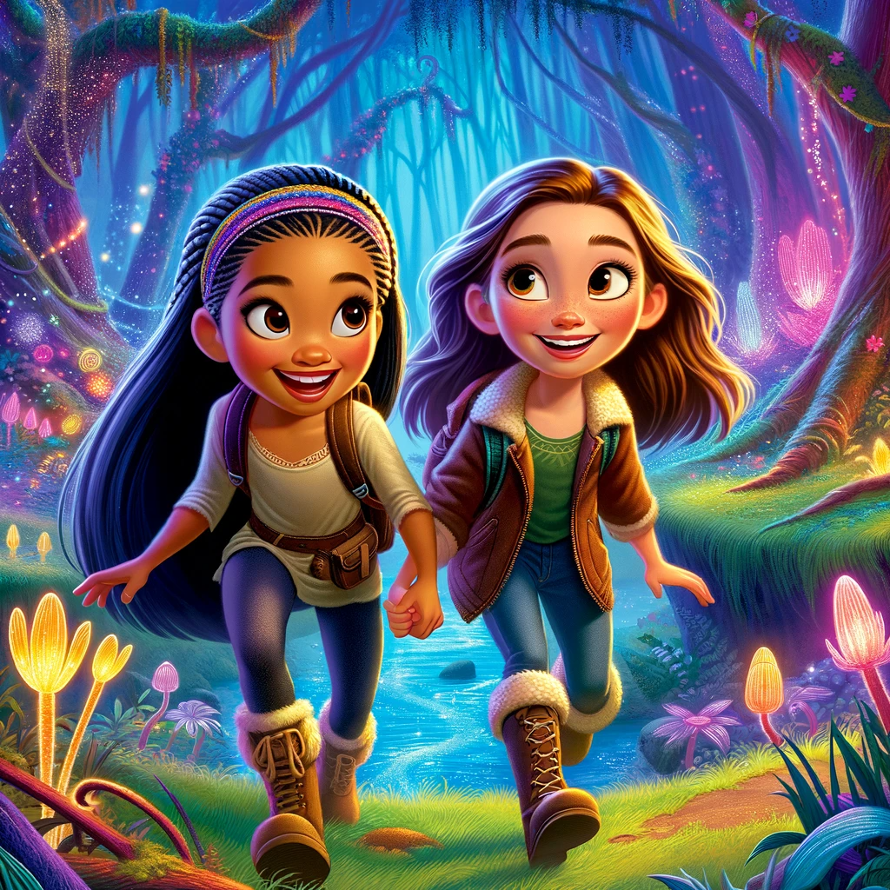
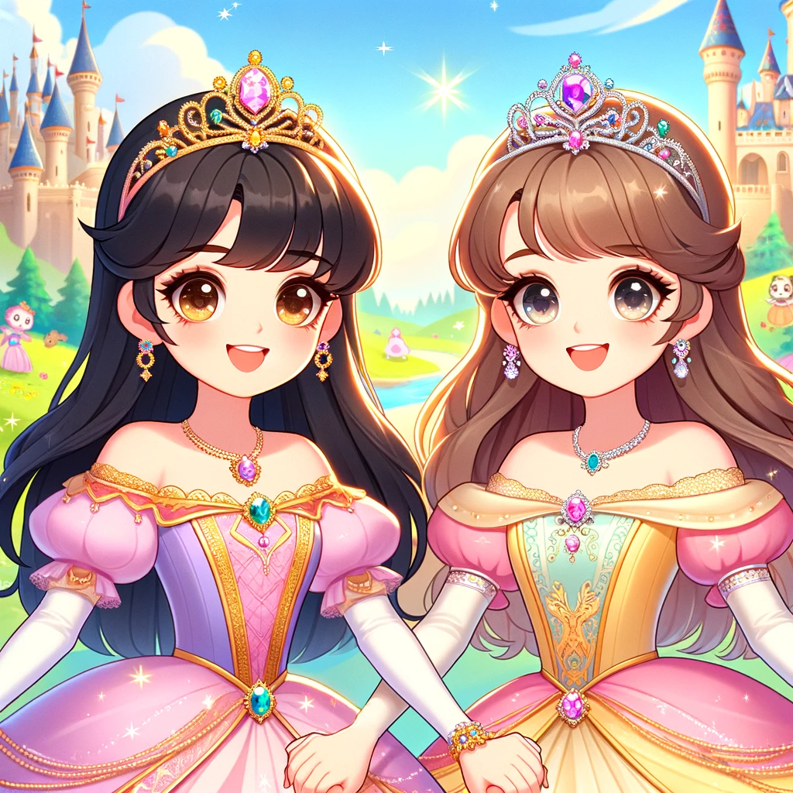
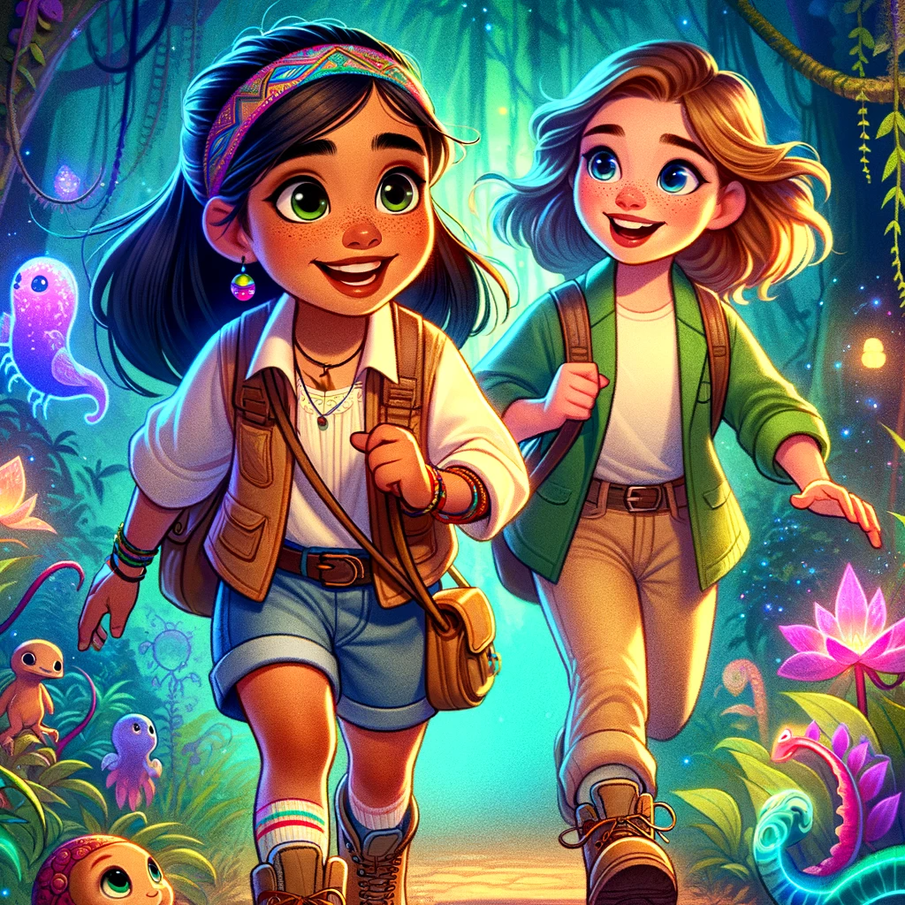

The Enchanted Forest Adventure

Once upon a time, in a land filled with wonder and magic, there were two best friends named Sydney and Emily. They lived near a mysterious and beautiful forest known as the Enchanted Forest. This wasn't just any ordinary forest; it was a magical place where the trees whispered secrets, and the flowers glowed under the moonlight.
One sunny morning, Sydney and Emily decided to explore the Enchanted Forest. They put on their adventure gear, filled with excitement and curiosity. As they stepped into the forest, they were greeted by the sweet scent of jasmine and the gentle chirping of colorful birds.
The girls discovered that the forest was full of magical creatures. They met talking rabbits who wore spectacles, danced with tiny fairies that sparkled like diamonds, and even played hide and seek with a friendly dragon who breathed rainbow fire. Every creature they met had a story to share, and Sydney and Emily listened with wide-eyed wonder.
As they ventured deeper, they came across a glittering stream. The water was so clear that they could see the shimmering fish swimming happily. They decided to follow the stream, which led them to a grove filled with mysterious, glowing flowers. These flowers were not just beautiful; they were magical, lighting up in rhythm with the girls' laughter.
But then, they faced a challenge. They found themselves at a crossroads, with two paths leading in different directions. Sydney wanted to explore the path filled with golden light, while Emily was drawn to the path shrouded in twinkling shadows. They realized that they had different ideas, but instead of arguing, they decided to split up and meet back in an hour. This way, they could both explore what they liked.
As they explored their separate paths, they discovered unique wonders. Sydney found a clearing where the sun's rays touched the ground, creating a golden dance of light and shadow. Meanwhile, Emily found a hidden cave adorned with crystals that twinkled like stars in the night sky.
When they reunited, they shared their experiences with each other, their eyes sparkling with excitement. They realized that their friendship was strong enough to respect each other's choices and that exploring different paths only added to their adventure.
As the sun began to set, they made their way back home, their hearts full of new stories and memories. They promised to return to the Enchanted Forest, a place where their friendship grew stronger and their adventures never ended.
And so, Sydney and Emily's journey in the magical forest taught them an important lesson about friendship: that it's not just about being together but also about supporting each other's dreams and adventures.
Princesses of the Enchanted Kingdom

In a magical kingdom far away, there lived two princesses, Princess Sydney and Princess Emily. Their kingdom was a land of wonder and magic, where every day promised a new adventure.
One beautiful morning, the two princesses decided to explore their kingdom. Dressed in their most colorful gowns and sparkling tiaras, they set out on their journey. They wandered through lush, whispering forests and crossed babbling brooks that sparkled like diamonds under the sun.
As they traveled further, they met marvelous creatures – dragons that painted rainbows in the sky, talking animals sharing stories of distant lands, and friendly giants playing hide and seek among the clouds.
However, Princess Sydney and Princess Emily faced a small dilemma. They both had different ideas about where to explore next. Princess Sydney wanted to climb the tallest hill to reach the clouds, while Princess Emily longed to frolic with the shimmering butterflies in the meadow.
Seeing the excitement in her friend's eyes, Princess Sydney said with a kind smile, "Let's chase the butterflies in the meadow first, Emily!" Emily's eyes sparkled with happiness, and together they danced among the butterflies, their laughter echoing through the meadow.
After their delightful time with the butterflies, Princess Emily turned to Sydney and suggested, "Now, let's climb your hill!" Hand in hand, they ascended the hill and reached up to the clouds, their hearts filled with joy.
On that day, the two princesses learned an important lesson: by playing nicely and considering each other's wishes, their adventures became even more splendid. They realized that sharing and caring for each other brought them closer, making their experiences in the magical kingdom truly extraordinary.
From that day forward, every adventure Princess Sydney and Princess Emily shared was filled with the warmth of friendship, laughter, and mutual respect, making their enchanted kingdom a haven of happiness and love.
Sydney and Emily's Spectacular Science Expedition

Once upon a time, in a small, bustling town, there was a curious 9-year-old girl named Sydney and her best friend, Emily. They were both known for their adventurous spirits and love for science. One sunny morning, they received an exciting invitation to join a science expedition with a group of grown-ups, including some renowned scientists.
Sydney and Emily were ecstatic! They packed their backpacks with notebooks, pencils, and magnifying glasses, eager to embark on their new adventure. The expedition was set to explore a hidden part of the forest, where rare plants and animals were said to reside.
As they trekked into the forest, the grown-ups shared their knowledge about the plants and animals they encountered. Sydney and Emily listened intently, their eyes wide with fascination. However, as the day went on, the girls' excitement made them forget to pay attention to the grown-ups' instructions.
Eager to make their own discoveries, Sydney and Emily wandered off the path, giggling and chasing butterflies. Suddenly, they realized they were lost, with no sight of the expedition team. The forest, which had seemed friendly and inviting, now felt vast and intimidating.
Feeling a bit scared, they remembered what one of the scientists had said earlier: "Always stay on the path, and if you get lost, stay where you are and call for help." The girls did just that. They called out for help and stayed put, trusting the grown-ups to find them.
It wasn't long before the expedition team, led by the grown-ups, found Sydney and Emily. The girls apologized for not listening and promised to respect and follow the instructions from then on. The grown-ups were relieved to find them safe and took the opportunity to teach them the importance of listening and respecting those with more experience.
For the rest of the day, Sydney and Emily stayed close to the group, asking questions and learning more than they ever had before. They realized that respecting grown-ups didn’t mean they couldn’t have fun; it just meant being safe while exploring the wonderful world of science.
From that day on, Sydney and Emily not only continued their adventures but also made sure to listen and learn from those who knew more. They discovered that respecting grown-ups was a part of growing up and becoming great scientists themselves.
And so, the science expedition turned into an unforgettable adventure, filled with lessons, laughter, and a lifelong love for learning and respect.